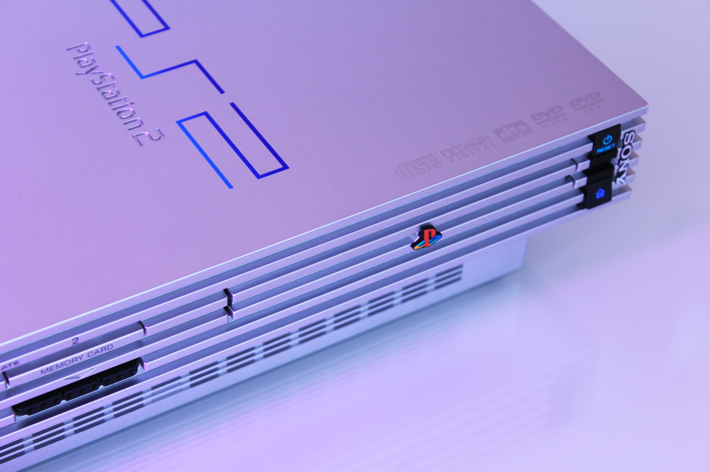

This image is an image of the original playstation, created in 1994, by Sony Computer Entertainment. It reached its peak in sales in 2000 when it sold 102.49 million units. This was the highest sale of any game console at the time. This would later be beaten by the PS2, selling ~155 million units.

The PS2 was the second Playstation console to release. It was released on March 4, 2000. Fun Fact: This was the first video game console that I ever played.

The PS3 was released on November 17, 2006. Since it's release, it has sold 87.41 million units, putting it in 4th place out of all the playstation Consoles.

The PS4 was released on November 15, 2013. The PS4 quickly became the leader in sales, selling 115.79 million units since its release, while the Xbox One has 50.19 million sales, and the Nintendo Switch surprisingly has 88.14 million sales, putting it in second place of the three, beating out Xbox by about 38 million sales since it's release (The Nintendo Switch was released 4 years after the Xbox One).

The PS5 was released on November 12, 2020. I did not get one at release but i was luckily able to get one a few months later, sometime around february. The PS5 sold around 1 million units on just launch day. As of February, 2022, PS5 sales have surpassed 17.3 millin sales globally. In October of last year, Sony reported that it sold 13.4 million PS5s.